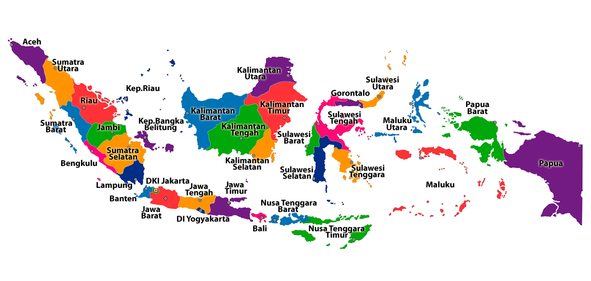

Keanekaragaman Budaya
Sumber: seputarlampung.pikiran-rakyat
Budaya Indonesia adalah seluruh kebudayaan nasional, kebudayaan lokal, maupun kebudayaan asal asing yang telah ada di Indonesia sebelum Indonesia merdeka pada tahun 1945. Budaya Indonesia dapat juga diartikan bahwa Indonesia memiliki beragam suku bangsa dan budaya yang beragam seperti tarian daerah, pakaian adat, dan rumah adat. Budaya Indonesia tidak hanya mencakup budaya asli bumiputera, tetapi juga mencakup budaya-budaya pribumi yang mendapat pengaruh budaya Tionghoa, Arab, India, dan Eropa.
Budaya di Indonesia
1. Keanekaragaman Etnis dan Bahasa
Indonesia memiliki lebih dari 300 kelompok etnis, yang masing-masing memiliki budaya dan bahasa mereka sendiri. Kelompok etnis terbesar meliputi Jawa, Sundanese, Batak, Minangkabau, dan Bali. Bahasa Indonesia adalah bahasa resmi negara, tetapi ada lebih dari 700 bahasa daerah yang berbicara tentang kekayaan linguistik.
2. Seni Pertunjukan
a. Wayang Kulit: Wayang kulit adalah seni pertunjukan tradisional yang menggunakan boneka kulit untuk menceritakan mitos dan epik klasik. Wayang kulit Jawa dan Bali adalah yang paling terkenal.

Sumber: Sinpo.id/Gettyimages
b. Tarian: Indonesia memiliki berbagai tarian tradisional yang menakjubkan, seperti tari Legong dari Bali, tari Pendet, tari Reog Ponorogo, dan banyak lagi. Masing-masing tarian ini menggambarkan cerita dan keindahan budaya setempat.
Sumber: selasar.com/
c. Musik: Gamelan adalah ansambel musik tradisional yang khas di Indonesia, terbuat dari instrumen seperti gong, metalofon, dan kendang. Musik ini digunakan dalam berbagai upacara adat dan pertunjukan seni.

Sumber: gramedia
3. Arsitektur Tradisional
Rumah adat Indonesia mencerminkan beragam kekayaan budaya. Contohnya adalah rumah adat Toraja di Sulawesi, rumah gadang Minangkabau di Sumatera Barat, dan joglo Jawa yang megah.

Sumber: rukita.co
4. Kuliner

Sumber: regional.kompas
Kuliner Indonesia adalah perpaduan rasa yang menggugah selera. Nasi goreng, rendang, sate, gado-gado, dan soto adalah hidangan khas yang tak terlupakan. Bumbu rempah yang khas membuat hidangan Indonesia begitu istimewa.
a. Nasi Goreng: Nasi goreng adalah hidangan populer yang terdiri dari nasi yang digoreng dengan bumbu, sayuran, telur, dan protein seperti ayam, udang, atau daging sapi. Rasanya gurih, pedas, dan lezat.
b. Rendang: Rendang adalah masakan daging sapi yang dimasak dalam santan dan rempah-rempah seperti cabai, serai, dan daun jeruk. Hidangan ini berasal dari Sumatera Barat dan memiliki cita rasa pedas dan kaya.
c. Sate: Sate adalah potongan daging yang ditusuk dan dipanggang di atas arang atau bara. Sate ayam dan sate kambing adalah varian yang paling populer. Mereka disajikan dengan saus kacang yang lezat.
d. Gado-gado: Gado-gado adalah salad sayuran yang disajikan dengan saus kacang, telur rebus, tahu, dan tempe. Rasanya segar dan gurih.
e. Soto: Soto adalah sup tradisional Indonesia yang berisi potongan daging, mie, dan sayuran, disajikan dengan kuah kaldu ayam atau daging yang lezat.
5. Pakaian Tradisional
Pakaian tradisional Indonesia adalah cerminan yang indah dari keanekaragaman budaya dan etnis yang ada di negara ini. Dari Sabang hingga Merauke, dari Aceh hingga Papua, setiap daerah di Indonesia memiliki pakaian tradisionalnya sendiri. Beberapa pakaian tradisional yang paling ikonik dan beragam di seluruh Indonesia.
a. Batik - Simbol Nasional Indonesia
Batik adalah kain yang dihiasi dengan motif geometris atau alam menggunakan teknik lilin malam dan pewarna alami. Batik diakui sebagai warisan budaya tak benda oleh UNESCO dan dianggap sebagai simbol nasional Indonesia. Setiap daerah memiliki gaya batiknya sendiri, seperti Batik Solo, Batik Jogja, dan Batik Pekalongan.
b. Kebaya - Keanggunan dan Klasik
Kebaya adalah busana tradisional yang sering dipakai bersama dengan kain batik atau songket. Kebaya terdiri dari blus dan sarung atau rok panjang. Ini adalah pakaian yang sangat anggun dan sering digunakan dalam acara-acara resmi atau pernikahan.
c. Songket - Kain Tenun yang Megah
Songket adalah kain tenun yang dihiasi dengan benang emas atau perak. Ini adalah salah satu pakaian tradisional terhormat di Indonesia dan sering dipakai dalam upacara adat, pernikahan, dan acara penting lainnya.
d. Seragam Adat - Simbol Kesatuan dan Persatuan
Di berbagai acara formal, seperti pernikahan adat atau upacara adat, sering kali digunakan seragam adat, yang memberikan rasa kesatuan dan persatuan dalam keragaman budaya.
e. Ulos - Warisan Budaya Batak
Ulos adalah kain tradisional dari suku Batak di Sumatera Utara. Ulos digunakan sebagai selendang atau kain pelindung dalam berbagai upacara adat dan kehidupan sehari-hari.
f. Sarung - Multifungsi dan Praktis
Sarung adalah kain yang digunakan untuk membungkus tubuh, sering kali digunakan oleh pria. Namun, sarung juga sering digunakan sebagai rok oleh wanita. Sarung memiliki berbagai desain dan pola yang unik tergantung pada daerahnya.
g. Tenun Ikat - Karya Seni Anyaman
Tenun ikat adalah kain yang dihasilkan melalui teknik anyaman yang rumit, dengan benang yang diikat dan dicelup sebelum tenunan. Tenun ikat ada di berbagai daerah, termasuk Sumba, Flores, dan Timor.
h. Baju Adat Daerah - Identitas Lokal
Setiap daerah di Indonesia memiliki pakaian adatnya sendiri, yang mencerminkan identitas budaya dan etnis setempat. Misalnya, Kain Sasirangan dari Kalimantan Selatan, Kain Cual dari Nusa Tenggara Timur, dan Pakaian Adat Minangkabau dari Sumatera Barat.
Sumber: womanindonesia.co.id
Pakaian tradisional Indonesia adalah perwujudan seni dan warisan budaya yang luar biasa. Masing-masing pakaian mencerminkan sejarah, kepercayaan, dan nilai-nilai masyarakat setempat. Mereka juga merupakan simbol kebanggaan nasional yang harus dilestarikan dan dihormati. Dengan beragamnya pakaian tradisional ini, Indonesia memamerkan kekayaan budayanya yang unik kepada dunia.
6. Upacara Adat
Sumber: mapelweb.com
Indonesia, negara dengan lebih dari 17.000 pulau dan beragam etnis serta suku bangsa, adalah ladang subur bagi berbagai upacara adat yang mendalam dan berwarna. Upacara adat adalah bagian integral dari budaya Indonesia, mengikat masyarakat dengan tradisi yang kaya dan nilai-nilai yang dihormati.
a. Upacara Adat Pernikahan
Upacara pernikahan di Indonesia adalah salah satu upacara adat yang paling berwarna dan meriah. Setiap daerah memiliki tata cara pernikahan adatnya sendiri, mengikuti kepercayaan, adat istiadat, dan tradisi masyarakat setempat. Misalnya, upacara adat Jawa memiliki serangkaian ritual yang mendalam, termasuk siraman, midodareni, akad nikah, dan resepsi pernikahan.
b. Upacara Adat Kematian
Upacara kematian adalah momen penting dalam budaya Indonesia. Upacara ini mencerminkan keyakinan masyarakat dalam peralihan roh ke dunia lain. Di Bali, upacara "Ngaben" adalah contoh upacara pemakaman yang penuh dengan simbolisme dan tarian tradisional yang unik.
c. Upacara Adat Panen
Indonesia adalah negara agraris, dan upacara adat panen adalah cara untuk menghormati dewa pertanian dan memohon hasil panen yang baik. Upacara ini biasanya melibatkan tarian, musik, dan persembahan kepada alam.
d. Upacara Adat Lahir
Upacara adat yang berkaitan dengan kelahiran juga memiliki peran penting dalam budaya Indonesia. Di Jawa, misalnya, ada upacara "Naloni Mitoni" yang dilakukan pada usia ke tujuh bulan kehamilan untuk melindungi ibu dan bayi dari hal-hal buruk.
e. Upacara Adat Khitanan
Upacara khitanan adalah tradisi yang umum dalam agama Islam di Indonesia. Ini adalah upacara sunat yang diikuti oleh perayaan dan pesta. Upacara ini mencerminkan pentingnya agama dalam kehidupan masyarakat Indonesia.
f. Upacara Adat Pengusiran Roh Jahat
Di banyak daerah Indonesia, terdapat upacara adat untuk mengusir roh jahat atau menghadapi bencana alam. Upacara ini mencerminkan kepercayaan masyarakat terhadap dunia gaib dan upaya mereka untuk menjaga keamanan dan kesejahteraan.
g. Upacara Adat Hari Raya Keagamaan
Selain upacara adat yang bersifat sosial, Indonesia juga memiliki upacara adat yang terkait dengan hari raya keagamaan, seperti Idul Fitri, Natal, Nyepi, dan Waisak. Upacara ini mencerminkan toleransi beragama yang kuat di Indonesia.
Upacara adat di Indonesia adalah jendela ke dalam kekayaan budaya dan nilai-nilai yang dipegang teguh oleh masyarakat setempat. Meskipun beberapa dari mereka telah beradaptasi dengan zaman modern, upacara adat tetap menjadi bagian penting dari identitas budaya Indonesia yang unik. Mereka juga menjadi cara untuk memperkuat hubungan sosial dan memelihara solidaritas dalam masyarakat yang beragam.
7. Kepercayaan dan Agama
Sumber: padamu.net
Indonesia, dengan kekayaan budaya dan geografis yang luar biasa, adalah rumah bagi beragam kepercayaan dan agama. Keanekaragaman ini adalah salah satu ciri khas negara ini, menciptakan budaya yang kaya dan dinamis
a. Islam: Agama Mayoritas
Islam adalah agama terbesar di Indonesia, diikuti oleh sekitar 87% penduduk. Islam tiba di Indonesia pada abad ke-13 melalui pedagang dan penyebaran agama, dan sejak itu telah menjadi bagian penting dari kehidupan sehari-hari masyarakat. Masjid adalah pusat kegiatan keagamaan dan sosial di seluruh negeri.
b. Kristen: Keberagaman Denominasi
Kristen adalah agama minoritas terbesar di Indonesia, dengan lebih dari 10% penduduknya. Berbagai denominasi Kristen ada di Indonesia, termasuk Katolik, Protestan, Ortodoks, dan Anglikan. Gereja-gereja ini berperan aktif dalam pendidikan, pelayanan sosial, dan kegiatan keagamaan.
c. Hindu: Bali sebagai Pusat Kepercayaan
Hindu adalah agama dominan di Bali, dengan sekitar 83% penduduk pulau ini menganut agama Hindu. Kepercayaan Hindu di Bali sangat berbeda dari Hinduisme di India dan dikenal dengan ritual, tarian, dan upacara adat yang kaya.
d. Buddha: Peninggalan Budaya di Pulau Jawa
Agama Buddha memiliki pengikut di Indonesia, terutama di pulau Jawa. Candi Borobudur, yang terletak di Jawa Tengah, adalah salah satu situs bersejarah terpenting dalam agama Buddha dan menjadi tempat ziarah dan tujuan wisata.
e. Kepercayaan Tradisional: Keseimbangan dengan Alam
Di samping agama-agama besar, Indonesia juga dikenal dengan beragam kepercayaan tradisional yang mencerminkan hubungan dengan alam, roh leluhur, dan kearifan lokal. Kepercayaan-kepercayaan ini sering berhubungan dengan pertanian, keseimbangan ekologi, dan budaya lokal.
f. Sikh, Katolik, Konghucu, dan Kepercayaan Lainnya
Selain agama-agama utama, Indonesia juga memiliki komunitas Sikh, Katolik, Konghucu, dan berbagai kepercayaan lainnya yang mencerminkan keragaman budaya dan nilai-nilai yang dihormati oleh masyarakat setempat.
Sumber: mediaindonesia.com/
Keragaman kepercayaan dan agama di Indonesia mencerminkan semangat toleransi dan harmoni yang kuat di antara komunitas beragama. Indonesia diakui sebagai salah satu negara dengan toleransi beragama tertinggi di dunia. Kepercayaan-kepercayaan ini membentuk budaya, ritual, festival, dan tradisi Indonesia yang kaya. Dalam harmoni budaya ini, kepercayaan dan agama menjadi pilar penting yang mempersatukan bangsa ini dan memberi warna kepada kehidupan sehari-hari warganya.
8. Kerajinan Tangan
Sumber: bp-guide.id
Indonesia adalah negeri dengan keanekaragaman budaya yang luar biasa, dan salah satu aspek paling menarik dari warisan budaya ini adalah kerajinan tangan. Dari Sabang hingga Merauke, dari Aceh hingga Papua, setiap daerah di Indonesia memiliki tradisi kerajinan tangan yang unik dan indah.
a. Batik: Seni Melukis pada Kain
Batik adalah seni tradisional Indonesia yang terkenal di seluruh dunia. Batik adalah teknik melukis pada kain dengan menggunakan malam (lilin) sebagai resisten untuk mencegah pewarna menyebar. Setiap daerah di Indonesia memiliki gaya batiknya sendiri, dengan motif dan warna yang khas.
b. Tenun: Keindahan Anyaman Benang
Tenun adalah seni membuat kain dengan menenun benang-benang. Setiap daerah memiliki motif dan desain yang unik dalam tenunannya. Misalnya, kain tenun ikat dari Sumba atau tenun Songket dari Sumatera adalah contoh kerajinan tenun yang sangat dihargai.
c. Kerajinan Kayu: Karya Seni yang Elegan
Indonesia memiliki tradisi panjang dalam kerajinan kayu. Kayu diukir menjadi berbagai macam barang, termasuk patung-patung, perabotan, topeng, dan alat musik tradisional seperti gamelan.
d. Gerabah: Seni Pembuatan Barang dari Tanah Liat
Kerajinan gerabah telah ada sejak zaman prasejarah di Indonesia. Vas, piring, dan patung-patung yang dihasilkan dari tanah liat dihiasi dengan motif-motif lokal yang indah.
e. Perhiasan Tradisional: Keindahan dari Bahan Alam
Perhiasan tradisional Indonesia sering terbuat dari bahan-bahan alami seperti mutiara, kayu, tanduk, dan batu. Desain perhiasan ini mencerminkan warisan budaya dan nilai-nilai tradisional.
f. Anyaman Bambu: Kekuatan dan Fleksibilitas Bambu
Anyaman bambu adalah seni menciptakan berbagai barang, dari keranjang hingga perabotan rumah tangga, menggunakan bambu sebagai bahan dasar. Seni ini mencerminkan kemampuan orang Indonesia dalam memanfaatkan alam sekitar mereka.
g. Kulit Kerang: Karya Seni yang Unik
Kerajinan tangan dari kulit kerang yang dihiasi dengan berbagai motif adalah bagian dari budaya di beberapa daerah, seperti Maluku. Motif-motif ini sering kali menggambarkan alam dan kehidupan sehari-hari.
Sumber: blog.tiket.com
Keanekaragaman budaya Indonesia adalah salah satu aset berharga bangsa ini. Meskipun begitu banyak perbedaan, rasa persatuan dan gotong royong tetap menjadi inti budaya Indonesia. Keberagaman ini menciptakan panorama budaya yang kaya dan mengagumkan, yang menjadikan Indonesia sebagai salah satu negara yang paling unik di dunia.